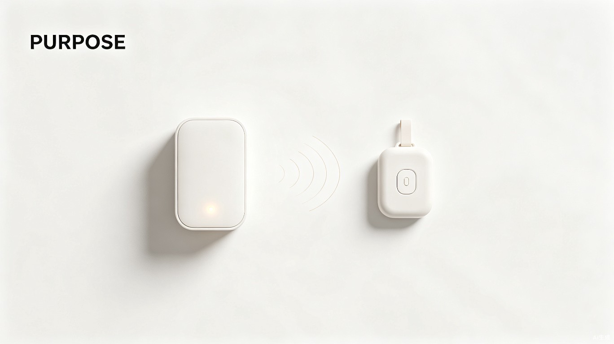

创意名称 + 创意介绍
想解决什么问题
针对独居老人居家安全监护不足的社会痛点，我们设计了一套低成本、易部署、全天候的智能监护装置，让远方的子女能够实时感知家中长辈的安全状态，让意外在第一时间被发现、被响应。
产品形态
「银发守护 · 智护养老平安盒」是一套包含室内多传感主机与随身跌倒监护小盒的居家养老安全设备。主机融合毫米波雷达、烟雾、温湿度等多模态传感器，小盒集成六轴 IMU 与一键 SOS，双端通过云端数据互通，可自动监测火情、人体异动、老人摔倒等险情，并同步向家人手机发送预警通知，实现"多传感融合感知 + 随身守护 + 云端联动 + 远程告警"的完整闭环。

目标用户及痛点
核心用户群体
主力受众
独居空巢高龄老人、腿脚不便的年迈长辈，需要 24 小时不间断的安全监护。
次要人群
工作繁忙、异地居住的子女，无法贴身陪护父母，急需远程获知老人居家状态。
拓展用户
社区养老站点、基层社区网格员，需要高效工具来批量管理辖区独居老人安全。
适用场景
老人居家日常活动、午休、夜间独处等全天场景；厨房做饭、起身走动等高风险时刻。
五大核心痛点
人身应急短板
老人在家摔倒、突发身体不适后，难以自主呼救，意外发生许久家属才能知晓，容易耽误救援时机。
市面硬件缺陷
成套智能养老监护设备造价昂贵，普通家庭难以负担；廉价单品功能单一，烟雾报警器、跌倒手环彼此独立无法联动。
看护精力消耗大
子女只能频繁打电话、抽空上门探望老人，耗费大量时间精力，依旧做不到全天候守护。
传统报警局限
普通烟感、燃气警报仅现场鸣笛，老人行动受限没法处置险情，警报无法远程发送给家人。
社区人手紧缺
社区工作人员数量有限，无法高频走访每一户独居老人，很难提早发现居家安全隐患。
系统架构
智护养老平安盒采用"端—边—云—屏"四层架构，基于多传感器数据融合实现从家中感知到家人告警的毫秒级响应：
graph LR
A[随身跌倒监护小盒
IMU传感器+一键呼救] -->|蓝牙/Wi-Fi| C[云端数据平台]
B[室内传感主机
毫米波雷达+烟感+温感] -->|Wi-Fi/4G| C
C -->|推送通知| D[子女手机APP]
C -->|管理后台| E[社区网格员大屏]
C -->|语音电话| F[紧急联系人]
style A fill:#C4704A,stroke:#2D2926,color:#fff
style B fill:#C4704A,stroke:#2D2926,color:#fff
style C fill:#7A9E7E,stroke:#2D2926,color:#fff
style D fill:#F5EDE4,stroke:#2D2926,color:#2D2926
style E fill:#F5EDE4,stroke:#2D2926,color:#2D2926
style F fill:#F5EDE4,stroke:#2D2926,color:#2D2926
核心功能模块
跌倒检测
随身小盒内置六轴 IMU 传感器，通过姿态识别算法实时监测老人运动状态，摔倒后 3 秒内自动触发告警。
室内异动感知
传感主机采用毫米波雷达，非接触式监测室内人体存在与活动轨迹，长时间无活动自动推送"静默告警"。
火情烟雾预警
集成高灵敏度烟雾与温度传感器，火情发生时同步本地蜂鸣 + 远程 APP 推送 + 短信通知三重告警。
一键紧急呼救
随身小盒设有实体 SOS 按键，老人感到不适时可一键呼叫预设紧急联系人，并发送实时定位。
价值与意义
社会价值
中国 60 岁以上老年人口已超 2.8 亿，其中独居老人占比持续攀升。智护养老平安盒以普惠性定价将整套设备成本压缩至 ¥50-60，打破智能养老设备的高价壁垒，让普通家庭也能为长辈筑起安全防线。设备部署无需改造家居、无需复杂配网，真正实现"插电即用"，降低技术门槛。
效率价值
通过云端数据互通与智能联动，子女从"被动担忧"转向"主动掌握"，社区网格员从"人海走访"转向"精准关怀"。系统提供的活动规律报表与风险预警分级，让有限的人力资源聚焦于真正需要帮助的老年人。
普惠养老
低成本方案让普通家庭也能享受智能监护，缩小数字鸿沟。
即时响应
秒级告警推送，大幅缩短意外发生到家属知悉的时间窗口。
多方协同
连接家属、社区、养老机构，构建分布式养老安全网络。
应用场景展示
场景一：夜间独自入睡
张奶奶独自在家过夜，凌晨起夜时不慎在卫生间滑倒。随身跌倒监护小盒检测到异常加速度与姿态变化，3 秒内触发告警，云端平台同步向儿子手机推送紧急通知并拨打语音电话。儿子通过 APP 一键联系社区网格员上门查看，老人得到及时救助。
场景二：厨房做饭忘关火
李爷爷做饭时出门取快递，灶台上的锅烧干冒烟。室内传感主机检测到烟雾浓度异常，立即启动本地蜂鸣提醒邻居，同时向女儿发送烟感告警。女儿通过 APP 远程联系物业，避免了火灾发生。
场景三：社区批量管理
某社区有 200 余户独居老人，网格员通过智护养老平安盒管理后台查看辖区老人实时状态。系统标注出 3 位连续 12 小时无活动的老人，网格员优先上门走访，发现其中 1 位老人身体不适已卧床一天，及时送医。
项目总结
「银发守护 · 智护养老平安盒」不仅是一套硬件设备，更是一条连接老人、子女与社会的安全纽带。我们用技术的温度回应老龄化社会的迫切需求，以低成本、易部署、高可靠的产品理念，让每一位独居老人都能在家安心生活，让每一位远方子女都能放心工作。
科技向善，守护银发。